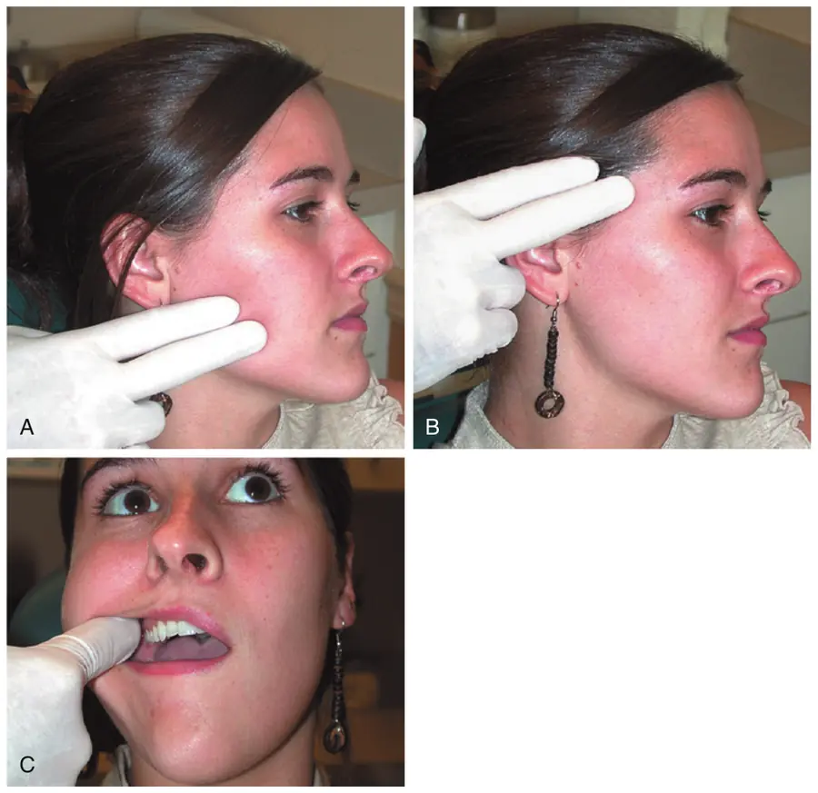
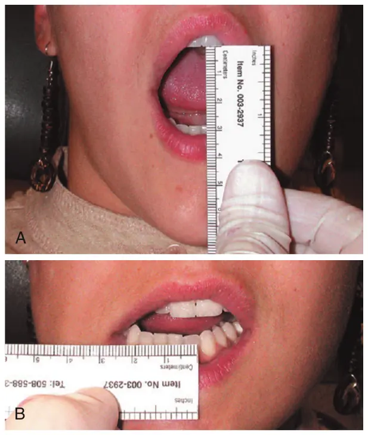

نسخه استخراجشده؛ ترجمه یا تأیید علمی انجام نشده است. وضعیت: captured
درد و اختلال عملکرد میوفاشیال (MPD)، شایعترین علت درد جونده و محدودیت عملکردی است که بیماران برای آن به دندانپزشک مراجعه میکنند.

و منشأ درد کجاست؟ منبع درد و اختلال، عضلانی است؛ عضلات جونده در نتیجهی عملکرد غیرطبیعی یا بیشفعالی، حساسیت و درد پیدا میکنند.
و همراهیاش: درد عضلانی مکرراً — ولی نه همیشه — با کلنچینگ روزانه یا براکسیسم شبانه همراه است.
و علت MPD چندعاملی است. یکی از پذیرفتهشدهترین علل، براکسیسم ناشی از استرس و اضطراب است، با اکلوژن بهعنوان عامل تعدیلکننده یا تشدیدکننده. و MPD میتواند بهعلت مشکلات داخلی مفصل مانند اختلالات جابهجایی دیسک یا بیماری دژنراتیو مفصل (DJD) هم رخ دهد.
و شکایت بیمار: بیماران MPD عموماً از درد منتشر، بدموضعیافته و پیشگوشی شکایت میکنند که میتواند سایر عضلات جونده مانند تمپورالیس و پتریگوئید داخلی را هم درگیر سازد.
و معاینه — و چهار یافتهی کلیدی که MPD را از مشکل مفصلی جدا میکنند:
و دربارهی فست سایش: دندانها مکرراً فست سایش دارند — ولی نبود چنین فستهایی، براکسیسم را بهعنوان علت مشکل رد نمیکند.
و رادیوگرافی: رادیوگرافیهای TMJ معمولاً طبیعیاند. برخی بیماران شواهد تغییرات دژنراتیو مانند کانتورهای سطحی تغییریافته، فرسایش، یا استئوفیت دارند — ولی این تغییرات میتوانند از MPD ناشی شوند یا اصلاً با آن بیارتباط باشند.
نخست عملکرد طبیعی: در یک TMJ با عملکرد طبیعی، کندیل بهصورت لولایی و لغزشی عمل میکند. حین باز شدن کامل، کندیل نهتنها روی محور لولا میچرخد بلکه رو به جلو به موقعیتی نزدیک پایینترین بخش برجستگی مفصلی هم انتقال مییابد.

و نقش دیسک: حین عملکرد، دیسک دومقعر میان کندیل و حفره بینابین میماند، با کندیل که در همهی مراحل باز و بسته شدن در برابر ناحیهی میانی نازک قرار دارد.
و تعریف اختلال داخلی: مکرراً بیماران با درد و اختلال عملکرد TMJ، رابطهی غیرطبیعی میان کندیل، دیسک و حفره دارند؛ این رابطهی غیرطبیعی معمولاً اختلال داخلی نامیده میشود.
و یک نکتهی دیگر: تظاهرات بالینی اختلالات داخلی متفاوتاند، ولی به شیوهای مشخص و بر حسب درجهی تغییر پاتولوژیک؛ در نتیجه معیارهای مرحلهبندی با توجه به یافتههای بالینی، رادیولوژیک، و جراحی تدوین شدند.
۱ — جابهجایی قدامی دیسک با جااندازی:
و علائم مرحلهی یک: بیماران با اختلال داخلی مرحلهی یک عموماً هیچ علامتی جز صدای جزئی مفصل ندارند، و باز شدن حداکثری طبیعی یا اندکی محدود است.
و آناتومی دو کلیک — که باید بشناسی:
و کرپیتاسیون: میتواند حضور داشته باشد و معمولاً نتیجهی حرکت مفصلی روی سطوح نامنظم است.
و مرحلهی دو: صداهای مفصلی مشابهی نشان میدهد ولی حساسیت مفصلی را هم آشکار میکند؛ و سایر علائمش میتوانند حساسیت عضلانی، سردردهای گیجگاهی، یا قفل شدن گذرای مفصل باشند.
و تصویربرداری در جابهجایی با جااندازی: رادیوگرافی سادهی TMJ باید طبیعی باشد. ولی MRI در وضعیت دهان بسته معمولاً جابهجایی قدامی دیسک را نشان میدهد، حال آنکه تصاویر دهان باز، ناحیهی میانی دیسک را جااندازیشده میان کندیل و برجستگی مفصلی نشان خواهند داد.
۲ — جابهجایی قدامی دیسک بدون جااندازی — مرحلهی سه:
در این نوع، جابهجایی دیسک نمیتواند جا انداخته شود، پس کندیل نمیتواند به گسترهی قدامی کاملش انتقال یابد — و همین مانع باز شدن حداکثری میگردد و انحراف مندیبل به سمت مبتلا ایجاد میکند.
و نکتهی افتراقی حیاتی: در این بیماران هیچ کلیکی رخ نمیدهد، چون نمیتوانند کندیل را روی بخش خلفی دیسک انتقال دهند.
و پیامدهای این نبود انتقال: باز شدن محدود، انحراف به سمت مبتلا، و کاهش حرکات جانبی به سمت مقابل.
و یک احتیاط علمی: برخی شواهد نشان میدهند محدودیت حرکت میتواند مستقیماً به خودِ جابهجایی دیسک مربوط نباشد، بلکه به چسبیدن دیسک به حفره و محدود شدن لغزش مفصل.